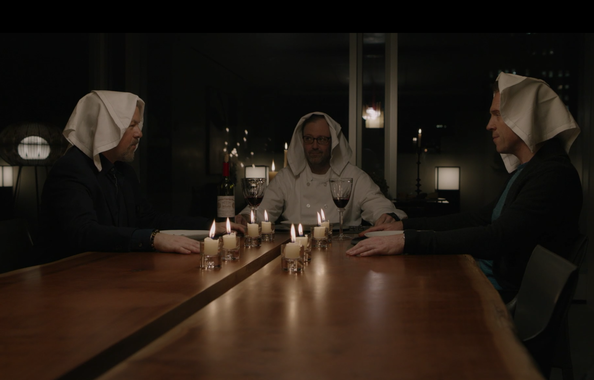
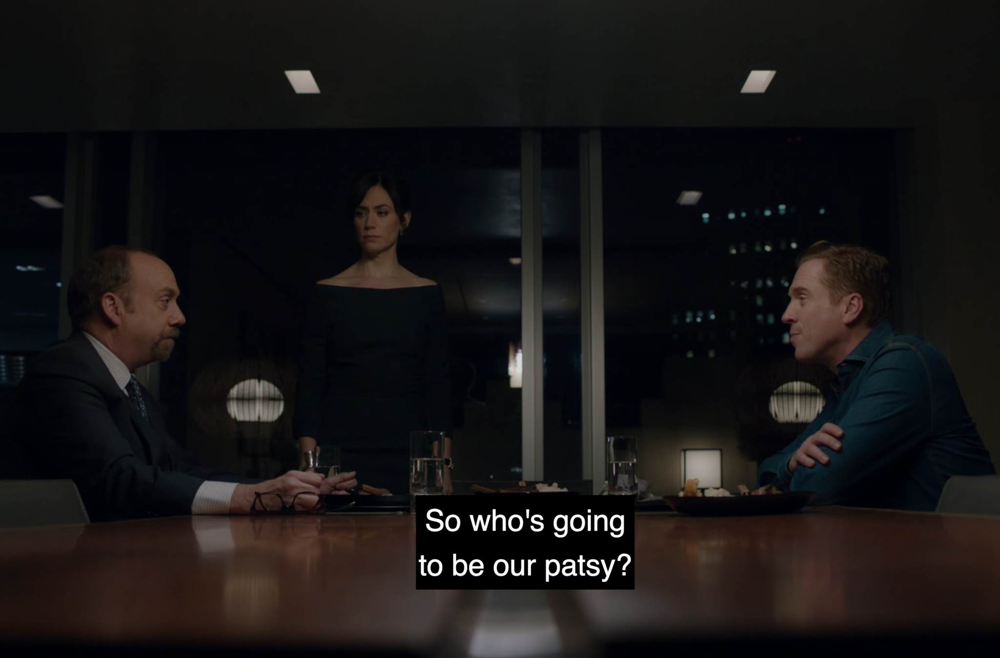

01
01EPISODE 01 / Tie Goes to the Runner
让资本离开他的手
阿克斯被起诉后资金冻结，泰勒接掌的公司急需重新运转；温迪推动他接受停手的代价。查克同时面对新部长的执法尺度与家庭交易痕迹，一场晚餐最终换了发言人。
打开本集图解 ↗当立场开始移动，才能、忠诚与交易也被重新估价。
十二集，追踪每一次选择怎样改变下一步。
三幕剧情、真实配图、分阶段人物关系、消息与选择路径、对照深读和台词卡。场景解读默认展开；单集在新标签页打开。
各篇包括前季必要背景与截至 S03 对应集的剧情。不使用后集解释当前行动。目录完整展示各集配图与导读，导读也涉及对应剧情。请按已观看的集数选择。
01阿克斯被起诉后资金冻结，泰勒接掌的公司急需重新运转；温迪推动他接受停手的代价。查克同时面对新部长的执法尺度与家庭交易痕迹，一场晚餐最终换了发言人。
打开本集图解 ↗阿克斯想用二十亿美元保留市场中的控制，泰勒却必须在海啸冲击下独立承担亏损。查克安排法官更替，布莱恩寻找失约证人；同名身份的错位最终让最脆弱的人付出代价。
打开本集图解 ↗ 03
03阿克斯为离婚与败诉准备隐形财富，把 Panay 的困境变成控制入口。泰勒的量化招聘揭开 Wags 的旧伤；查克无法阻止 Lugo 案，却在服从命令的同时为秘密调查另留房间。
打开本集图解 ↗ 04
04父亲可能作证，查克先用感谢、再用土地利益应对。阿克斯借慈善董事会的反感谋取太阳能收益；太空发射的悲剧让泰勒与温迪共同面对一个难题：赚钱的判断与人的失去能否同时被承认。
打开本集图解 ↗一片未确认销毁的载玻片让阿克斯取消出行。泰勒在硅谷识破糟糕推介，也遇见能共享语言的人；纽约这边，合规争执与补做的文件提醒所有人，再大的体系也会留下小缺口。
打开本集图解 ↗
06法官只给检方一周，Spyros 却在此时递出温迪做空的交易与位置记录。阿克斯考虑认罪，查克准备自首；温迪拒绝在两种牺牲中选择，安排一场必须交出武器的会面。
打开本集图解 ↗
07三人合作要让案件停在开庭之前。医生家出现载玻片，电话记录改了方向，Mafee 改口，Dake 被留下承担失败。撤案之后，支票与亲吻可以交付，赢下来的自由却未必让人轻松。
打开本集图解 ↗ 08
08阿克斯重返交易，清仓与扩募同步启动；泰勒要求自己的资金，Spyros努力证明自己值得留下。查克反制政治恩主，却在公开宣布时另选方向。自由恢复以后，控制权成为新的战场。
打开本集图解 ↗ 09
09阿克斯需要带动二百亿美元募资的第一笔钱，泰勒却质疑危险金主能否成为根基。卢戈在押送中死亡，查克发现留在职位上并不等于拥有行动权；两条线把依附关系的价格推到台前。
打开本集图解 ↗ 10
10十五亿美元赎回把阿克斯推向不情愿的交易。他在家庭聚会上听见旧友劝告，却用泰勒的私交换来替代方案；查克秘密追查部长，温迪则同时应付家宴与员工的信心危机。
打开本集图解 ↗ 11
11薪酬日把阿克斯与泰勒推上同一张谈判桌。温迪请劳拉帮忙留人，查克则为修补与艾拉的关系动用权力；奖金谈妥之后，新公司的招牌与另一场调查仍在悄悄推进。
打开本集图解 ↗ 12
12阿克斯在募资会上盛赞泰勒，六十亿美元承诺却在次日分流。查克以为抓住部长的干预证据，办公室里等着他的却是另一套安排；旧导师失去控制，新的联盟在餐桌边形成。
打开本集图解 ↗